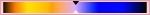

This command shows a dialog window when executed. This window can be used to manage the display filters and their options. Display filters are not to be confused with the filters in the -menu. Display filters do not alter the image data, but only one display of it. You can imagine display filters like big panes before your screen. They change your perception of the image. This can be useful for things like soft-proofing prints, controlling the color management but also simulation of color deficient vision.
This dialog has two small selectboxes. The left selectbox displays the Available Filters. You can move a filter to the right selectbox by selecting it and clicking on the button. The Active Filters window on the right displays filters you have chosen and which will be applied if the adjacent box is checked. You can move filters from the right selectbox to the left selectbox by using the button. If you select a filter by clicking on its name, its options are displayed below the two selectboxes.
-
Simulation of deficient vision (Seção 5.12.5, “Visão com deficiência de cor”; Seção 5.12.6, “Contraste”)
-
Digital photography helper (Seção 5.12.4, “Clip Warning”)
-
Others (Seção 5.12.7, “Gama”)

ACES (Academy Color Encoding Specification) is a specification that defines a color encoding system created to standardize how color is managed to create an accurate color workflow. Within that standard, a RRT (Reference Rendering Transform) converts the colors from the ACES color space to the used color space in your image.
This filter allows to visualize underexposed and overexposed areas of a photo with user-configurable colors. For now, it’s mostly geared towards images where colors are stored with floating point precision. You will mostly benefit from this, if you work on 16-/32-bit per channel float images such as EXR and TIFF.
- Show shadows
-
Enable visualization for underexposed pixels (less than 0 in 32-bit float mode).
- Shadows color
-
User-configurable color that will be used to fill underexposed pixels.
- Show highlights
-
Enable visualization for overexposed pixels (more than 1 in 32-bit float mode).
- Highlights color
-
User-configurable color that will be used to fill overexposed pixels.
- Show bogus
-
Enable visualization for not-a-number (NaN) pixels, only visible when there is a division by zero error and suchlike.
- Bogus color
-
User-configurable color that will be used to fill NaN pixels.
- Include alpha component
-
When enabled, include the alpha component in the warning.
- Include transparent pixels
-
When enabled, include fully transparent pixels in the warning.
A imagem que você criará, nós esperamos, será vista por muitas pessoas em muitos sistemas diferentes. A imagem que parece incrível na sua tela pode parecer diferente para pessoas com deficiências de visão ou em uma tela com configurações diferentes da sua. Algumas informações podem até mesmo não serem visíveis.
- Tipo de deficiência de cor
-
Neste menu em lista você pode selecionar entre:
- Protanopia[5] (insensibilidade ao vermelho)
-
A protanopia é uma deficiência visual da cor vermelha. É o conhecido daltonismo (incapacidade de enxergar as cores vermelho e verde). O daltonismo ocorre com bastante frequência na população.
Já a Protanopia é mais complexa; uma pessoa com esse problema não consegue enxergar tanto a cor vermelha ou verde, mas ainda continua sendo sensível ao amarelo e azul. Inclusive, essa pessoa perde a percepção à luminosidade e às mudanças de tons em comprimentos de onda curtas.
- Deuteranopia (insensitivity to green)
-
Com a deuteranopia, a pessoa possui uma deficiência de visão verde. Deuteranopia é na verdade como a protanopia, pois a pessoa perde a percepção ao vermelho e verde, mas não perde a percepção de luminosidade ou mudanças de tom.
- Trinatopia (insensibilidade ao azul)
-
Com a tritanopia, a pessoa possui deficiência na percepção de azul e amarelo, apesar de ainda ser sensível ao vermelho e verde. A pessoa ainda possui alguma percepção de luminosidade, e mudanças de tonalidade devido ao longo comprimento de ondas.
Figura 16.43. Exemplo de protanopia

Imagem original

Uma pessoa cega para o vermelho não pode enxergar o texto vermelho (255,0,0) em um fundo preto (0,0,0).
Figura 16.44. Exemplos de três tipos de deficiência em uma imagem

Visão normal

Protanopia

Deuteranopia; na deuteranopia, o amarelo é trocado pelo vermelho.

Tritanopia; na tritanopia, o verde é levemente representado na extensão do azul.
Aqui voltamos ao campo médico. A “Sensibilidade ao contraste” é a capacidade do sistema visual de distinguir pequenas diferenças no contraste. Algumas pessoas com catarata (que significa que a lente possui cristais opacos, que dispersa a luz sobre a retina) ou doença na retina (por exemplo, devido à diabetes, que destrói os bastões e cones da retina) possuem uma deficiência na sensibilidade ao contraste: por exemplo, elas possuem dificuldades em distinguir pontinhos em um vestido.
Se você ficou interessado nesse assunto, você pode pesquisar na internet por “sensibilidade ao contraste”.
- Ciclos de contraste
-
Com o filtro de “contraste”, você pode ver a imagem como se estivesse sofrendo de catarata. Você pode precisar aumentar o contraste da imagem para que a sua avó possa ve-la bem. Na maioria dos casos, apenas pequenos valores de Ciclos de contraste são interessantes. Valores altos criam um efeito lateral que não tem interesse para nós aqui: se você aumenta a luminosidade para valores acima de 255, as cores complementares aparecerão.
A relação entre a intensidade do sinal elétrico e o brilho da cor não é exato e depende do dispositivo (da câmera, da scanner, do monitor, etc.) O “Gama” é um coeficiente usado para corrigir essa relação. A sua imagem deve ser visível tanto em áreas escuras quanto claras, mesmo que ela sejaexibida num monitor com muita luminosidade ou, ao contrário, com pouca. O filtro de tela “Gama” permite que você tenha uma ideia da aparência da sua imagem sob essas condições.
![[Dica]](images/tip.png)
|
Dica |
|---|---|
|
No caso de você desejar não apenas alterar o gama da visualização atual, mas alterar o gama da imagem em si, então pode encontrar uma descrição para isso em Seção 8.10, “Níveis”. |